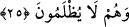

24. Onların bu tutumları: Bize ateş, sadece sayılı günlerde dokunacaktır,
demelerinin bir sonucudur. Onların vaktiyle uydurdukları şeyler de dinleri hakkında
kendilerini yanıltmıştır.
Onların bu arka dönüp yüz çevirmeleri işledikleri günahların “bize ateş ancak sayılı
günler miktarınca dokunacak” demeleri sebebiyledir. Sayılı günler, buzağıya taptıkları
müddet olan kırk gündür. Bu konudaki itikatları kökleşmiş, bu sebeple gördükleri
âyetler ve başlarına gelen belâlar, onlara tesir etmez olmuştur.
“Onların vaktiyle uydurdukları bu şeyler dinleri konusunda kendilerini
yanıltmıştır.” Yukarıdaki sözleri ve “bizim Peygamber babalarımız bize şefâat
edecekler” demeleridir. Yahut “Allah Yâkub (a.s.)’a söz verdi ki: Senin çocuklarına
azap etmeyeceğim, ancak yemin yerini bulsun diye azıcık edeceğim” gibi uydurdukları
sözler onları dinlerinde aldatmış; işledikleri çirkin fiilleri bu sebeple yapmışlardır.
İbn Abbas (r.a.)’ın anlattığına göre, “Yahûdîler Tevrat’ta şöyle okuduklarını iddiâ
ederler ve inanırlar: Cehennemin iki ucu arası kırk senelik yoldur ki, zakkum ağacına
varınca son bulur. Biz, zakkum ağacına varıncaya kadar azap göreceğiz, ondan sonra
cehennem yok olacak.”
Halbuki cehennemin dibi “sakar” denilen yerdir ki zakkum ağacı oradadır. Onlar
cehennemin kapısından girip azap görmeye başladıkları ve zakkum ağacına varıp
karınlarını onunla doldurdukları zaman sakarın görevlisi onlara şöyle der: “Siz, ateşin
size ancak sayılı günler miktarınca dokunacağını iddiâ ediyordunuz. Şimdi kırk sene
geçmiş durumdadır ve siz burada ebediyyen kalacaksınız.”
25. Fakat, onları gelmesinde şüphe edilmeyen bir gün için topladığımız ve hiçbir
haksızlığa uğramaksızın herkese kazandığı şeylerin tastamam ödendiği zaman
halleri nice olur?
“Onları, geleceğinde hiç şüphe bulunmayan bir günde topladığımız ve herkesin -
hiç kimseye zulmedilmeyerek- dünyada kazandığının tastamam verildiği zaman acaba
halleri ne olacaktır?”
“Acaba halleri ne olacaktır, nasıl olacaktır?” sorusu, hazırlanan azabın büyüklüğünü